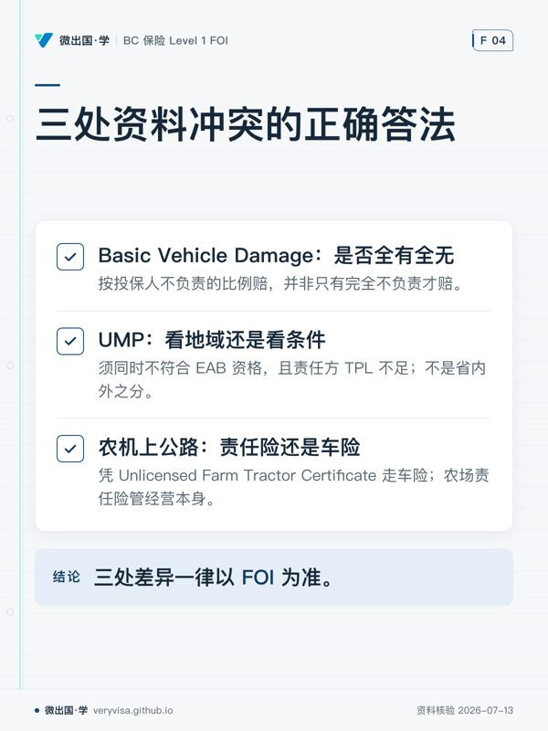

同时手上有两套备考资料是好事，但它会制造一种特有的焦虑：同一个知识点，两本书说得不一样， 到底按哪个答题？
这一页把已经查清楚的分歧逐条列出来，并且每条都给出判定与依据。 只列「两边不一样」而不判以谁为准，等于把矛盾原样丢给你，那不叫对照表。
先说一件影响全局的事：本地 CAIB 资料是什么
本项目里的 textbook/CAIB1/ 不是官方原版资料，而是 agy／codex／copilot 三套 AI 解析
经审计后合并的产物（其自身 README 已声明；随附 PDF 是 59 页精简版，不是官方厚本）。
这件事直接改变了「差异」的含义。看到 CAIB 与 FOI 不一致时，有三种可能：
| 可能 | 特征 | 处理 |
|---|---|---|
| ① 真实内容差异 | 两边都有明确原文支持 | 记录，按 BC 考试口径判 |
| ② 我方派生件的简化或幻觉 | CAIB 侧说法笼统、缺 BC 限定 | 以 FOI 为准，并回写修正派生件 |
| ③ 版本年份差 | 数字类，一边旧一边新 | 分清「当年印刷值」与「现行值」 |
本轮查实的四处不一致里，有三处属于②。 也就是说：大部分「矛盾」不是两位专家吵架， 而是二手资料把话说漏了。这个判断本身比任何一条具体差异都值钱。
采信规程：以 FOI 原文为准 → 判断属于哪一种 → 属②就去修派生件。 禁止把派生件的错误当成资料分歧记账——那会让错误获得「有出处」的假身份。
一、收入替代上限：四个数字在流传，而它们全都对过
| 来源 | 数值 | 性质 |
|---|---|---|
| B.C. Reg 60/2021 s.2(2) | $100,000 | 法规起始值（2021-05-01 至 2022-03-31） |
| FOI Autoplan 增补册（2024-04 版） | $109,000 | 当年印刷值，且该增补册明示不考 |
| ICBC 指南 APG20Q (032026) p.7 | $119,000 | 原文：For 2025, the maximum yearly insurable income amount is $119,000 |
| ICBC 理赔页与 Income Top-Up 页 | $122,500 | 2026 年值（同一官网的产品页至今仍写 $119,000） |
⚠️
2026-07-31 更正：别把「不是现值」当成「假的」
本页旧版把 $119,000 判成「早期 AI 笔记的已证伪值」。那是错的—— 它白纸黑字印在 ICBC 现行指南上，是 2025 年的法定值。
根因在 B.C. Reg 60/2021 s.2(3)/(5)：这个上限每年按工业平均工资指数上调、 进位到 $500 的倍数，每年 4 月 1 日换一次。 所以「哪个数对」问错了，要问的是「哪一年」。。
判定：一个数都不背，背机制。
- 赔付基数是净收入，比例 90%
- 封顶按毛年收入
- 超过上限者可买 Income Top-Up（$10,000 一档，最多加购 $100,000）
FOI 自己就在这一段加了免责声明：「本金额不会在考试中被问到」。 所以看到几个不同的数不必慌——它们是同一条指数化规则在不同年份的取值， 考试要的是它们共同的那套机制。
二、Basic Vehicle Damage：按比例，还是「不负责才赔」
| 来源 | 说法 |
|---|---|
| FOI 增补册（原文） | 限额 $200,000，赔款按投保人负责的百分比扣减 |
| 我方 CAIB 派生件 | 「if you are not at fault」 |
判定：以 FOI 为准。属于类型②，派生件已回写更正。
正确理解：按不负责的比例赔，不是全有全无。 车损 $12,000、负责 25% → 赔 $9,000，剩余 $3,000 靠可选 Collision。
这条背后是一个更大的误解：「无过失」说的是不打官司，不是不分责任。 责任比例在两处照样起作用——车损按不负责比例赔，Collision 免赔额按负责比例担。 两个方向正好相反，考试常在这里设陷阱。
三、UMP：是不是「只在省外才有用」
| 来源 | 说法 |
|---|---|
| FOI 增补册（原文） | 两个条件：①不符合 EAB 资格 ②责任方 TPL 不足 |
| 我方 CAIB 派生件 | 「injured outside B.C.」 |
判定：以 FOI 为准。属于类型②，派生件已回写更正。
判据不是地域而是那两个条件。FOI 原文明确举了 BC 境内的例子： 越野碰撞中不符合 EAB 资格的行人或骑车人仍可起诉，UMP 补足责任方不够赔的部分。
真正的边界是：在法律不允许车祸诉讼的场合（包括 BC 的绝大多数情形）不适用。
四、农机上公路：农场责任险还是车险
| 来源 | 说法 |
|---|---|
| FOI／ICBC | Unlicensed Farm Tractor Certificate，凭证须随车携带 |
| 我方 CAIB 派生件 | 农场责任险覆盖农机在公路上的碰撞责任 |
判定：BC 考试与实务均以 FOI／ICBC 为准。属于类型②，派生件已回写更正。
ICBC 为「不需按《机动车法》上牌的农用机具」提供统保式第三方责任。 FOI 原文的例子很直白：农田被公路分成两半，拖拉机哪怕只是横穿也必须投保。
记这条线：公路段归车险，农场责任险管的是农场经营本身。
五、最大的差异不是说法不同，而是「有没有讲」
FOI 全书没有农场保险内容。
全文检索 FOI 15 章正文：没有农场财产或农场责任的任何章节，
farm 一词只出现在增补册的农用拖拉机凭证（车险口径）里。
而 Insurance Institute 公开的 BC Level 1 考纲在 Commercial Property and Liability（5%）下明确列了「Property insurance for farms」。
⚠️ 但这两件事推不出「FOI 一定会考农场」
这里要格外小心，因为同一张执照有两条不同的考试：
| Insurance Institute 路径 | IBABC 的 FOI 路径 | |
|---|---|---|
| 使用资料 | C81／C82 + BC Auto Supplement | FOI + Autoplan 增补册 |
| 考纲权重与子项 | 公开（30/30/30/5/5，Commercial 下含 farms） | 未公开 |
| 卷面 | — | 100 题单选 |
本项目一直用前者的权重当后者的代理（kb-02 自己就写明这是「权重可迁移使用」）。
但代理不等于同一份考纲。再加上一条实测：FOI 官方 90 题练习卷里一道农场题都没有。
反过来也不能断言「不考」——那份练习卷已知是部分卷， 它整块不含汽车险，而汽车险恰恰是考试重点。
所以诚实的结论是：判不了。 能给的只有性价比口径—— 本站这组农场题加讲义十几分钟能过一遍，万一考到就是白丢的分，看一遍划算； 按 30% 板块的强度去啃则不划算。
怎么用这一页
- 遇到两本书说法不一致时，先查这里有没有记过。
- 没记过的，按采信规程自己判一遍：以 FOI 原文为准，并判断属于哪一类。
- 判完之后记回去——机器台账在
learn/data/knowledge/units.jsonl， 命令是python3 learn/scripts/knowledge.py --conflicts。
这一页是那份机器台账的人读视图。台账是权威，页面是投影—— 改结论要改台账，不要只改这一页。
本页为本站自撰，不含任何来源材料原文逐字抄录。
本页知识卡
不看正文也能拿到这一节的核心内容：先看导读，再看图。点图放大，左右翻页。
- 先看先看根问题，再看哪类特征与眼前冲突相符。
- 易漏大部分矛盾来自二手资料把话说漏了，不是两位专家吵架。
- 下一步去讲义对回 FOI 原文，再带具体冲突找持牌专业人士。

- 先看先看题目究竟在问赔付算法、适用门槛，还是道路使用场景。
- 易漏最易混的是把二手资料里的绝对化表述直接当答案。
- 下一步碰到说法打架，回讲解页按采信规程判，再定作答。